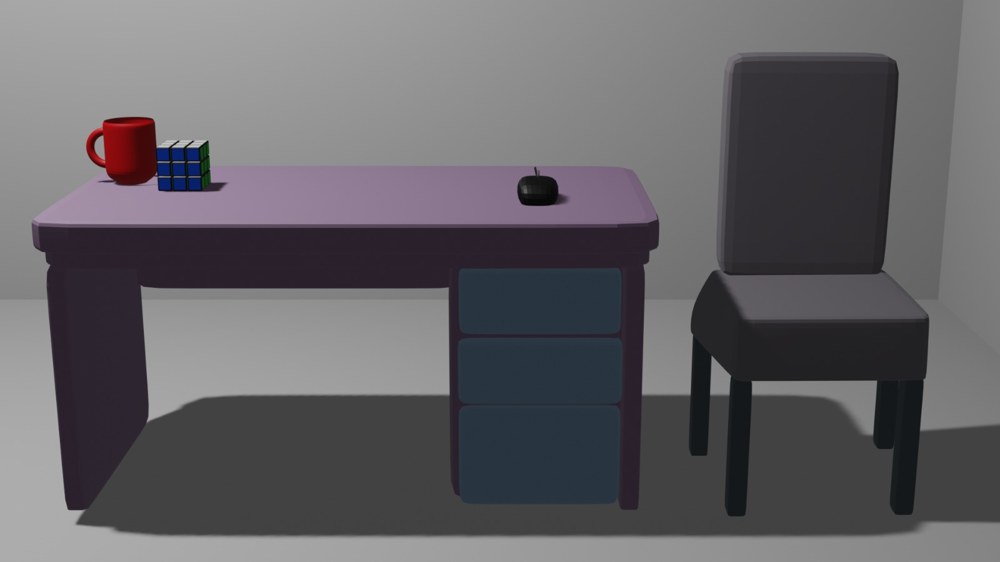
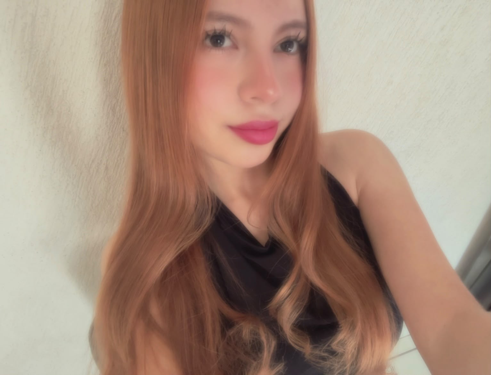
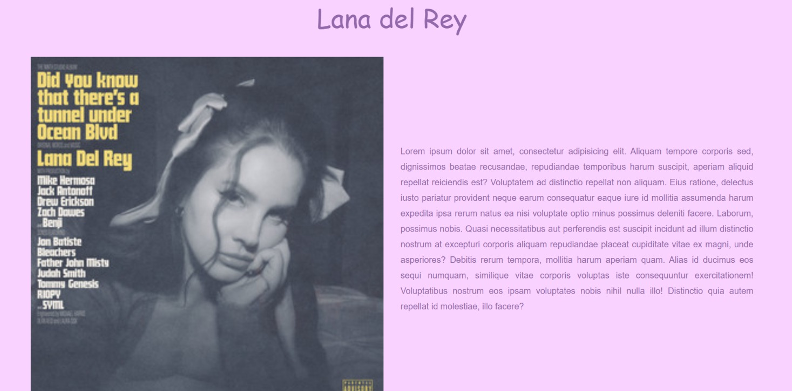
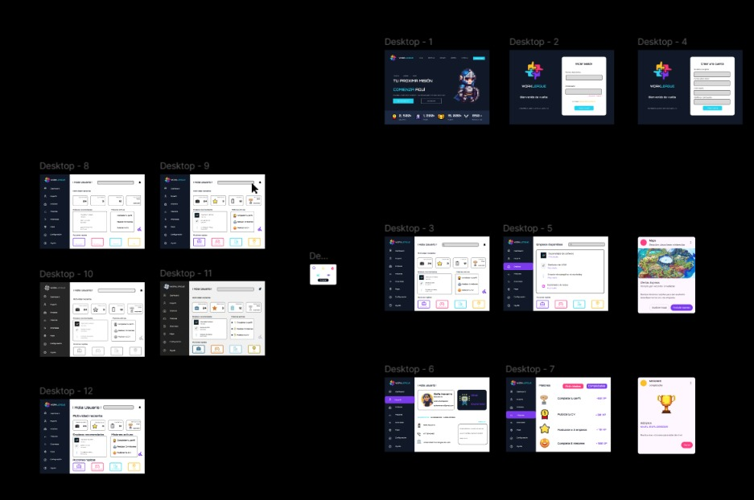

Modelado y Animación 3D
Realicé proyectos de modelado tridimensional utilizando Blender, trabajando con formas, materiales, iluminación y cámaras para crear objetos y escenas digitales.
PORTAFOLIO PERSONAL
Creatividad, ideas y proyectos que me representan.
BIENVENIDO A MI ESPACIO
Este es mi portafolio personal. Aquí comparto algunos de mis proyectos, mis intereses y las habilidades que he desarrollado durante mi formación.
Ver mis proyectos
Me considero una persona extrovertida, amigable y creativa. Me gusta conocer personas, aprender cosas nuevas, reír y compartir momentos especiales. Disfruto mucho pasar tiempo con las personas que amo, porque para mí es importante crear recuerdos bonitos. Me gusta transmitir alegría y buena energía a los demás.
Estudio en la Universidad Tecnológica de León en la carrera de Tecnologías de la Información en la especialidad de Entornos Virtuales y Negocios Digitales. Me interesa el diseño digital al igual que marketing digital. En mis proyectos busco combinar funcionalidad, creatividad y una presentación visual agradable. Trato de mejorar día con día y esforzarme al máximo.
Te muestro algunos trabajos que he realizado.

Realicé proyectos de modelado tridimensional utilizando Blender, trabajando con formas, materiales, iluminación y cámaras para crear objetos y escenas digitales.

Desarrollé una página web utilizando HTML y CSS, incorporando herramientas de Bootstrap para crear un diseño atractivo.

Creé propuestas de interfaces digitales organizando colores, tipografías, iconos y elementos visuales.
Estas son algunas de las actividades que disfruto realizar.
Mi canción favorita es “Brooklyn Baby” de Lana Del Rey. Me gusta por su melodía relajada y su estilo alternativo y nostálgico. Me transmite una sensación de tranquilidad y libertad, y disfruto mucho la atmósfera que crea. Es una canción que puedo escuchar varias veces y que me encanta por su personalidad y estilo único.